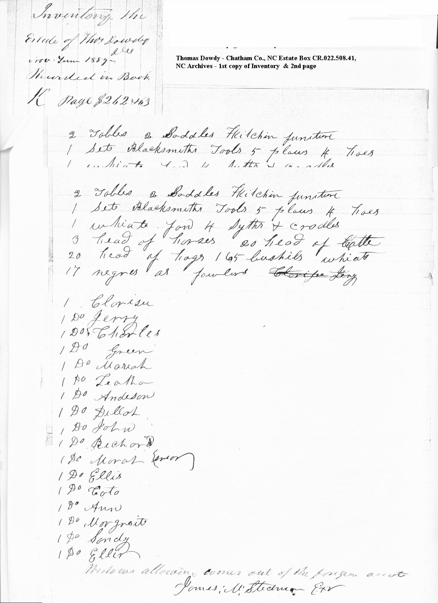

|
Thomas Dowdy of Gulf, Chatham Co NC, d.
1859
Estate Files of Thomas Dowdy of Gulf
Contain many documents between family members complaining
about issues of the indebtness of William A. Dowdy to his father
Thomas Dowdy, Sr. William went by the name Billy and Thomas Sr.
is referred to as “the old man”
It appears that William A. Dowdy was in debt with numerous
bills to pay. His father Thomas Dowdy issued a deed to him of
William’s land. in order to save it for William and his
children. The estate file is filled with court documents. Just
a few were chosen to reflect on the character of William A. Dowdy
. Slaves are mentioned as being sold to cover the debts.
J. M. Stedman Ex vs Wm. A. Dowdy - Answer of Deft filed Sept
Term “59 21st day Janr 1860 - Waddell Sols.
“he well remembers that he was called on not only
to witness the deed which was executed at Complts own house but
also to witness the delivery of the negroes and other personal
propety sold. .. a short time after the above mentioned sale
and delivery of the property and deeds, the father told this
Deft that the son had sent over the negroes ot his (the father's)
house and that he had then upon told them to return to his sons's
and that he would call for them or send for them when he should
need then.
W. H. Burk had at one occasion charged the Father with
having fraudently purchased this property to cover his son debts
.. and that last summer when the tax lists were taken the Complt
gave it all in as his father's
,, a short time before the death of his testator, the Complt
was at his (Testators) house and in the presence of Deft stated
that there were some judgments in Testators possession which
had been paid off by the Complt and which therefore he ought
to have and there upon the Testator produced all his papers and
requested Complt to pick out any such judgments which Complt
according did.
.. .. Complt had relinquished his right to qualify as Executor
of his father's will and found that the Deft was in the act of
makin an Inventory of his Testators estate including that now
claimed by Complt and then for the first time he objected and
claimed the said property his own
.. the Deft lived in sight of his said fathers house for
2 or three years after the execution of the said deeds to the
father. And the said father was confined to the house for 2 or
3 weeks
... Deft that in examining the papers of his Testator he
hath found notes, judgements and other evidences of debt paid
off by the said Testator for the Compt. To the amount of Fifteen
or Sixteen hundred dollars.
[Date of deed 8 April 1856
... slave sold who was sold and bought by Ferrell did bring
the sum of $500 ... Deft delivered at the court house door and
way bid off by Frances Ferrill he is not positive but believes
that he sold $500
Court Documents Nov. Term 1864 James Dowdy and others vs.
Matthew Dowdy & Wm. A. Dowdy petition for division of slaves
Estate Box CR.022.508.41
Two lists of slaves were found from the Inventory of the Estate
of Thomas Dowdy deceased taken November 1859. Thirteen slaves
were divided among the heirs of Thomas Dowdy in 1864
Inventory Lists from Estate papers of Thomas Dowdy
|
Inventory the Estate of Thos Dowdy Nov. Term 1859 recorded
in Book K page # 262 & 63
17 Negroes as fowlers Clarrisse Jery
Clarisse
Jerry
Charles
Green
Mariah
Leatha
Andeson
Dilloh
John
Richard
Morat ? Word beside name not legible
Ellis
Cato
Ann
Margreit
Sandy
Eller |
A inventory of property found at Thomas Dowdys Deceased 1859
17 negroes as fowlers
Clarisse
Jery
Charles
Green
Mariah
Leatha
Anderson
Dilloh
John
Richard
Ellis
Cato
Moriah [scratched out oldest]
Ann
Margaret
Sandy
Ella |
List of sale - no slaves sold.
Notes on slaves
Charles Segraves hired 1 girl Moriah at $9.60
Sarah Dawdy - 1 boy Anderson $11.50
1 girl Diller - $1.61
1 girl Leatha to Keep & 4 children [no amount given]

|
SLAVE SCHEDULE |
1850 Slave Schedule Upper
Regiment, Chatham Co., NC. Census taken 11 October 1850. William
A. Dowdy and Thomas Dowdy are listed on the same page. [No page
number on the page] The second Thomas Dowdy is listed with neighbors
John Green, Wm. T. Burns and Henry Harris. Thomas Dowdy with
wife Elizabeth is listed on the 1850 census with these neighbors. |
|
1850
Upper Regiment |
William A. Dowdy |
Thomas Dowdy |
Thomas Dowdy -Wife Elizabeth |
|
|
|
|
|
Age - sex - race
32 Female Black
14 Female Mulatto
9 Female Black
7 Male Black
6 Male Mulatto
6 Female Black
5 Male Mulatto
1 Female Mulatto |
Age – sex –
race
41 Female Black
24 Male Black
21 Female Black
21 Female Black
20 Male Black
19 Male Black
17 Male Black
14 Male Black
11 Female Black
8 Female Black
6 Female Black
2 Male Black
1 Female Black |
8 Male Black |
|
|
|
|
|
|
|
|
|
Page 25 William A. Dowdy and Sarah
Dowdy on same page. Census taken 21 July 1860 |
|
1860
Middle Division |
Schedule 2, page 25 |
|
|
|
Wm. A. Dowdy |
Sarah Dawdy |
Thomas Dowdy married to
Elizabeh |
|
|
|
|
|
Age – sex –
race
40 Female Black
23 Female Mulatto
9 Female Mulatto
2 Male Mulatto
10/12 Female Mulatto |
Age – sex –
race
30 Female Black
26 Male Black
18 Female Black
6 Female Black
5 Male Black
4 Male Black
3 Male Black
1/ m Male Black |
Age – sex –
race
35 Female Mulatto
22 Female Mulatto
17 Male Black
15 Male Black
7 Male Mulatto
6 Female Mulatto
2 Female Mulatto |
|
“Exibit “e”
- James M. Steman as Executor of Thomas Dowdy on acct. current
with said estate 1859-1868 |
|
Year - Expense |
Date Paid |
Person with Description |
|
|
1859 |
12 January 1860 |
For catching “Lewis”
a run away out
Prison charges Lewis |
$6.50
$5.00 |
|
1860 |
12 January 1860 |
shoes |
$2.10 |
|
1860 |
12 January 1861 |
Paid Negro Charles |
$3.00 |
|
1860 |
12 January 1861 |
Mending shoes
Making clothes |
$ .25
$ .85 |
|
1860 |
12 January 1861 |
Return Negro him? |
$ .40 |
|
1860 |
12 January 1861 |
Return Negro him |
$ .40 |
|
Negro Hire Notes for 1860 |
|
1860 January 3 |
|
By note J. J. Palmer
, A. P. Latarn
2 Jos pen? From
Out from January 3
1861 |
$258.00
$181.88 |
|
1860 January 3 |
|
By note Sarah Dowdy
Out from Jan 3, 1861 |
$76.50
$65.63 |
|
|
May be others ?? |
|
|
|
|
|
|
1861 |
1 January 1862 |
For keeping Letitia
& children |
$75
$60 |
|
1862 |
1 January 1863 |
For keeping Letitia
& children |
$28
$20.72 |
|
1863 |
|
For keeping Negros |
$24
$16.32 |
|
1864 |
|
For keeping Negros |
$400
$248 |
|
1864 – Jan |
1 January 1864 |
Clothes |
$2.00 |
|
Receipt to James
M. Stedman dated 3 January 1865
On or before the 25
day of Dec next we or either of us promis to pay J. M. Stedman
.. $2,050 in such money be taken by the Treasure of North Carolina
for the hire of Two negroes Jerry and Charles
W. A. Dowdy |
|
Receipt to James M.
Steadman dated 4 January 1864
Front: 12 months after date we or
either of us to pay J. M. Steaman .. $227.50 for value received
of him and do promise to shoe the negroes & cloth them Letha
& Richard & Jeffery. Mathew Dowdy
Back: Received of the widow Note
$100 provided to Mathew keeps Lettia and 2 children not
in perpation for the time he keeps them. Mathew Dowdy Note $227.25 |
|
|
|
|
|
Thomas Dowdy Estate
Documents |
. |
, |
|
1862 |
Rent of the Plantation
of Thomas Dowdy Decd year 1862 by J. M. Stedman Exr
rend pond Field to
Eli Dowdy $2.25 and other big filed $4
2 big filed Minter
Foushee $12 Others 1 medow field, 1 field by the house, stud
lot
Negro hire for the
year by the estate
Clarisee - James Coggins
$41
Jery - A. Comeron $77
Charles - Sarah Dowdy
$51
Green - W. Colville
$92.50
Anderson -W. J. Slown
$50.75
Mariah & child
- Mrs. Loia
or Laia $14
Dellar - Minter Foushee
$16
John – Alvese
Poe $10.25
Ellis = Plesant Wicker
$2.25
Dick – Mathew
Dowdy $5
Leatha & 2 children
to keep for the --?[list] Sarah Dowdy - $28 |
|
|
|
|
|
Court of Pleas &
Quarter Sessions August Term 1864
Committee ordered to
divide the slaves. Brooks Harris, Jordon Tyser, A. McIntyre
November Term 1864
- Commission has included
in the division of the slaves certain slaves the property of
J. M. Stedman & not the property of the Estate of said Dowdy
- Commissioners have
failed to include in the division certain slaves given to other
children of Thomas Dowdy who have removed levy and the limits
of this State. Which slaves should have been included, if female
slaves given to Stedman were included as the report shows was
don at is manifestly unjust to Stedmand to include the slaves
he has & not included those given to the other children of
Thomas Dowdy have been removed out of this state
several other statements
but division was set aside
5 November November
1864 Jordon Tyson A. McIntrye, Brooks Harris
Slaves divided Lot
#1 Nelson G. Hill & wife Mary Hannah & Child & Jerry
Lot #2 Mathew Dowdy
& William A. Dowdy their mothers interest Green, Cato, Dollar
and Adeline
Lot #3 James Dowdy
Flora, Richard, Mary
Lot #4 William A. Dowdy
Charles Clarisa
Lot #5 Mathew Dowdy
Anderson, Leathy
Lot #6 Allen Dowdy
- Samuel 2nd girl of James M. Stedman
Lot #7 Heirs of Thomas
Dowdy Jr. Moriah and first child of The James M. Stedmans woman
Lot # 8 Armstead L.
Dowdy Delah, John
Lot #9 James M. Steadman
and wife Sally, Esther & child Cato and fifth child of Esthers
and a defetive child? James Stedman negro boy Joe
|
#1
N. G. Hill & wife
Mary |
#1
Mathew & W. A.
Dowdy
[mothers interest] |
#3
James Dowdy |
#4
William A. Dowdy |
#5
Mathew Dowdy |
#6
Allen Dowdy |
#7 Heirs
Thomas Dowdy Jr. |
#8
Armstead L. Dowdy |
#9
James
Steadman
wife Sally |
|
Hannah & child $4500 |
Green
$3655 |
Flora
$2700 |
Charles
$3655 |
Anderson
$4000 |
Samuel
$4000 |
Moriah
$3500 |
Dellah
$3300 |
Esther
& child
$3300 |
|
Jerry
$2500 |
Catos
$1800 |
Richard
$3000 |
Ellis
$2740 |
Leathy
$2500 |
2nd
girl
James
M. Steadman woman
$2250 |
1st
child of James Stedmans Woman
$2750 |
John
$3300 |
Cato child
$1800 |
|
Adaline
$1200 |
Mary
$800 |
Clarissa
$400 |
|
|
|
|
5th
child Esther
$800 |
|
|
|
|
|
|
|
|
Defective
child $400 |
|
|
|
|
|
|
|
|
Boy Joe $$1500 |
|
James M. Stedman alloted
boy Joe for a composition him for causing the Children of Esther |
|
Court Case II -- Concerning
the estate of Sarah Dowdy- Slaves [# given to identify documents] |
|
11 |
February Term 1864 |
James Dowdy, Allen
Dowdy, Armistead L. Dowdy, heirs of Thomas Dowdy Junior, Nelson
G. Hill & Mary his wife, James Steadman & wife Sarah
Plaintiffs vs. Mathew Dowdy & Wm. A. Dowdy Defts. Conderning
the slave division
* States Thomas Dowdy Sr. died
in 1861? -- that the slaves left by him .. were to be divided
among the Legatees share and share alike. .. the widow having
depened from the will was entitled to one share but the same
was never divided and delivered to her but the said slavees were
kept by the Executor named in the said will unitl the full Settlement
of the estate .. The slaves about 13 in number equally divided
.. among the legatees. |
|
12 |
November Term 1864 |
James Dowdy & others
vs. Matthew Dowdy & Wm. A. Dowdy Service accepted John Manning
At. For Matthew & Wm. A. Dowdy August Term 1864 H. H. for
Pltfs. Petition for Division of Slaves |
|
13 |
November Term 1864 |
Petition for Division
Slaves Dowdy vs Dowdy James & Sally Stedman. Indicating disapproval
of division because slaves that they were given were included
in the heirs divison and the slaves that were given to out of
state heirs were not included. |
|
14 |
16 November 1864 |
Slave Division Lots
- # 1 Nelson G. Hill & wife Mary – Hannah & Child
– Jerry
#2 Mathew & Wm.
A. Dowdy – mothers share – Green, Adeline
#3 James Dowdy -Flora,
Richard, Mary
#4 William A. Dowdy-
Charles, Ellis, Clarisa
#5 Mathew Dowdy- Anderson,
Lhethy,
#6 Allen Dowdy, - Samuel
& girl of James Stedmans woman
#7 Heirs of Thomas
Dowdy -Moriah and first child of James Stedmans woman
#8 Armisted Dowdy -Dellah
, John
#9 James Stedman and
wife Sarah Esther and Child , Cator, Fifth child of Ester
& defective child and James Stedman one negro boy Joe as
compensation to him for causing the children of Esther |
|
Civil
War Ends April 1865 |
More ex-Slave Families Traced
1870 NC Census
Swains Station, Greenwood, Moore Co NC
Jerry Dowdy 40 b NC (black)
Elizabeth Dowdy 28
Emily Dowdy 7
Isabella Dowdy 6
Cornelia Dowdy 5
Leander J Dowdy 7/12
Margaret Dowdy 12 b NC (black) living nearby in HH
of Emanuel Morris (white)
Sloans, Moore Co NC
(this may be the right family?)
Jno Gillam 49
Leatha Gillam 46
Dellah Gillam 18
Richard Gillam 16
John Gillam 14
Ellis Gillam 12
Cato Gillam 11 (he's too young)
Adline Gillam 9 (she's likely too young)
Sarah Gillam 5
Mary Gillam 4/12
Oakland, Chatham Co NC
Charly Dowdy 29; black; farmhand
Caraline 25
Harriet 12
Willis 7
Margaret 5
Henry 4
James 2
Ellis Dowdy 18; black; farmhand (in HH of Samuel Gilmore)
Moriah Dowdy (female) 57; black;
keeping house (living next door to William A. Dowdy)
Ella 12
|
Loyd Emerson HH 1870 Census P. O. Gulf, Chatham
Co., NC, Roll M593-1129, Page 64 |
|
Sandy
born 1862
mother
can not read or write |
|
|
1880 CENSUS - Loydd Emerson HH 1880 Census Gulf Township,
Chatham Co., NC, Roll T9-958, Page195B, ED 31, SD 2 |
|
Ann
born 1840
Sandy
born 1859
Emma
born 1862 |
|
|
1900 CENSUS - Sandy Dowdy 1900 Census Gulf Township,
Chatham Co., NC Roll T623-1188, Page 3A, ED 7, SD 4 |
|
Sandy
Born
June 1858
Aunt
Ella born
1859 |
|
|
Frank Tysor HH 1900 Census Gulf, Chatham Co.,
NC, Roll: T623 -1188, Page: 1A, ED 7, ED 4 |
|
Ella
born
1860 |
|
|
1910 CENSUS - Sandy Dowdy 1910 Census Gulf Township,
Chatham Co., NC, Roll T624-1102, Page 7B, ED 10, SD 4 |
|
Sandy
born
1848
or 1858
Ann
born 1842 |
|
|
Lloyd Emerson a boarder
[Divorced] in
household of Calton McHaney 1910 Census Williams Township, Chatham
Co., NC, Roll T624-1102, Page 9B, Ed 19, SD 4 |
|
|
|
William Rives HH 1910 Census Matthews Township,
Chatham Co., NC, Roll T624-1102, Page 2A, ED 15, SD 4 |
|
Ellen
born
1875? |
|
|
Frank Tysor HH 1910
Census Gulf
Township, Chatham Co., NC, Roll T624-1102, Page 3A, ED 9, SD
4 |
|
Ellen
born 1859 |
|
|
1920 CENSUS Sandy Dowdy HH 1920 Census
Gulf Township, Chatham Co., NC, Roll T625-1289, Page 1A, ED 9,
SD 4 |
|
Sandy
born
1858 |
|
|
Wlliam Rieves HH 1920
Census Gulf Township, Chatham Co., NC, Roll T625-1289, page 144,
ED 10, SD 4 |
|
Emma
born 1857 |
|
|
1930 CENSUS - Sandy Dowdy HH 1930 Census Gulf Township, Chatham
Co., NC, Roll 1680, Page 7B, ED 12, SD 9 |
|
Sandy
age Age 72
married
when 26 years old |
|
|
William Rieves HH 1930
Census Gulf
Township, Chatham Co., NC, Roll 1680, Page 9A, ED 11, SD 9 |
|
Emma
born 1962 |
|
Possible lineage
Lunny, Darlington, South Carolina
Greene Doudy 31, black, born North Carolina
Edith Doudy 30
Ella Doudy 12
Ida Doudy 4
Easter Doudy 3
Mary Doudy 1
|

 Chatham County
Chatham County